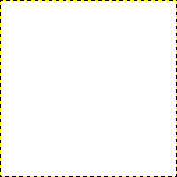
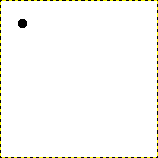
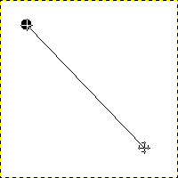
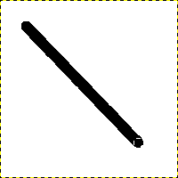
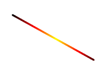
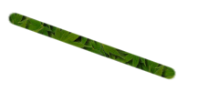
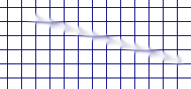
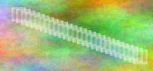
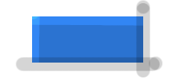

In this section, you will learn how to create simple objects in GIMP.
Vamos começar desenhando uma linha reta. O jeito mais fácil de desenhar uma linha reta é usando sua ferramenta de pintura favorita, o mouse e o teclado.
-
Create a New Image
Figura 7.31. Uma nova imagem

O diálogo mostra uma nova imagem, preenchida com um fundo branco
Create a new image.
-
Choose a Tool
Select a brush tool from the Toolbox, for example the
 Pencil tool or the
Pencil tool or the
 Paintbrush tool.
Paintbrush tool.
-
Select a Color
Select a foreground color, but be sure that the foreground and background colors are different.
-
Create a Starting Point
Figura 7.32. O início da linha reta

O diálogo mostra uma nova imagem, com o primeiro ponto, que indica o início da linha reta. O ponto usa a cor preta como cor de frente.
The size of this dot represents the current brush size, which you can change in the Brush Dialog.
Crie um ponto inicial clicando na área de visualização da imagem com o botão esquerdo do mouse. Sua tela de pintura deve estar parecida com Figura 7.31, “Uma nova imagem”.
-
Draw the Line
Figura 7.33. A linha de ajuda

A captura de tela mostra a linha de ajuda, que indica onde a linha terminada vai ficar.
Now, hold down the Shift key on your keyboard and move the mouse away from the starting point you created. You'll see a thin line indicating how the line will look.
-
Finish the Line
Figura 7.34. A linha após o segundo clique

A linha criada aparece na janela de imagem depois de se desenhar o segundo ponto (ou ponto final), enquanto a tecla shift ainda estiver pressionada.
If you're satisfied with the direction and length of the line, click the left mouse button again to finish the line. The last step is to let go of the Shift key. GIMP displays a straight line now.
Figura 7.35. Example I

Set Dynamics to “Color From Gradient” and set Color Options to “Incandescent”. Under Fade Options, set Repeat to “Truncate”. Depending on the size of your underlying image, you might want to change the Fade length as well.

Select the Clone tool and set the source to “Maple Leaves” pattern.
Figura 7.36. Example II

Use → → → to create a grid. Use the Smudge Tool to draw a line with a slightly larger brush.

Use → → → to create the cool plasma cloud. Use the Erase Tool with a square brush to draw a line.
Figura 7.37. Example III

Use the rectangle select tool to select a rectangle, and then fill the selection with a light blue color. Select the Dodge/Burn tool. Set the type to Dodge and paint along the top and left side using an appropriately sized brush. Set the type to Burn and paint along the right and bottom.